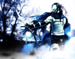

Forums galactiques > Taverne galactique : lieu de discussion informel > Machine a café [Rp!]
Pages : 1 2 ... 73 74 75 ... 443 444
| daetha Réputation à la taverne : 526  17/05 ETU 15:13 | Score : 0 Détails Pour ça ? Ca a un nom ! Il était tout pour moi. Mon rayon de soleil de la journée. Maintenant je me retrouve plongée dans l'obscurité. Je ne sais que faire. Pour le moment une seule solution me vient.
| ||
| -[Aerÿnn]- Réputation à la taverne : 2661  17/05 ETU 15:19  | Score : 0 Détails Ca = Vie et non ton amour.
L'obscurité t'entoure et il n'y a qu'un seul être qui pourrait t'en éloigner... Et cet être, c'est toi ! Je ne peux rien faire de plus que ce que je t'ai déjà dit. Et je ne peux te cloîtrer dans une pièce forte afin que ta vie soit préservée... C'est toi seule qui décidera de ton avenir. Si tu tentes le coup de continuer ou pas... | ||
| Alkadrim Réputation à la taverne : 461  17/05 ETU 15:25 | Score : 0 Détails Alkadrim, qui, comme à son habitude, écoutez la conversation caché derrière l'un des nombreux pilliers de la salle se dit en lui-même "c'est un sacré bout de femme... Toujours le mot pour réconforter."
| ||
| daetha Réputation à la taverne : 526 17/05 ETU 15:40 | Score : 0 Détails *Daetha s'éffondra en larme.*
| ||
| -[Aerÿnn]- Réputation à la taverne : 2661 17/05 ETU 15:47 | Score : 0 Détails Aerÿnn chercha de nouveau un mouchoir et se rappela qu'elle n'en avait pas, elle se décida donc d'aller voir s'il y avait des serviettes propres près de la machine...
Elle lui dit avant de se lever : Je reviens, attends-moi... | ||
| Alkadrim Réputation à la taverne : 461 17/05 ETU 15:56 | Score : 0 Détails Voyant Aerÿnn s'éloigner, Alkadrim décida de prendre les choses à bras le corps. Il s'approcha de daetha. Il fit tomber quelque chose ressemblant vaguement à une peau de banane devant lui. Feignant de ne pas voir la peau de banane, il l'écrasa à l'aide de son pied droit. Dès lors, sa jambe droite parti en avant de manière brusque, forçant Alkadrim à tomber par terre, le postérieur en tête. Bien que souffrant légèrement, il regarda daetha. Il vit que cette dernière se mis à pleurer de plus belle. Il rampa alors jusqu'à l'arrière du pilier le plus proche en ce disant "Je ferais mieux de me cacher..."
| ||
| -[Aerÿnn]- Réputation à la taverne : 2661 17/05 ETU 16:04 | Score : 0 Détails Du coin des yeux Aerÿnn regardait Daetha effondrée...
Mais un autre l'étais aussi de par la maladresse qu'il venait de faire, et malgré l'ambiance soutenue et triste, elle sourit discrètement en voyant ce jeune Commandant. Les serviettes dans une main et un café chaud dans l'autre, elle retrouna à sa table : Tiens... Bois un peu. Et essuies ces grosses larmes ma belle... | ||
| daetha Réputation à la taverne : 526 17/05 ETU 16:08 | Score : 0 Détails *Daetha plzeurant à torent, piqua une crise. Une rage furieuse. elle se trnasforma en un éclaire et sans crier. Puis d'un coup elle brisa la table. Elle sortit son sabre et se dirigea vers le pilier. Elle envoya son sabre pour trancher le pillier hélas la lame se brisa. Elle regarda son sabre puis le lança très loin. elle poussa un crie et envoya son poing contre le pillier. L'un de ses doigts se brisa et une gerbe de sang coula le long de la colonne. Puis elle décolla. elle se mit à quattre pattes sur le plafond puis essaya de le fracassé. elle ne parvint qu'à exploser une partit de ce dernier. Elle hurla à la mort et se laissant tombée elle fit un demi tour retomba sur ses jambes et prit la machine à café. Celle ci bien lourde fut laisser partir un autre hurlement. Elle réussit à soulever la machine qui servit de bélier pour enfoncer le plafond.puis daetha passa dehors. la machine retomba dans la salle.*
| ||
| Alkadrim Réputation à la taverne : 461 17/05 ETU 16:12 | Score : 0 Détails Alkadrim, qui était à quatre pattes , caché derrière le pilier et la tête rentré entre ses épaules, s'avança légèrement. "Je ne voulais pas la vexer, juste lui changer les idées."
| ||
| -[Aerÿnn]- Réputation à la taverne : 2661 17/05 ETU 16:21 | Score : 0 Détails Aerÿnn médusée devant ce spectacle de rage infinie, ne savait pas quoi faire ni quoi en penser... Ce devait être après la tristesse, la colère qui est sortie...
Elle eût un moment de panique et eût peur non pas pour elle mais pour Daetha qui risquait de se blesser. Et ce fût le cas ! Non content de ça, elle disparût. Aerÿnn s'était levée quand Daetha cassa la table et ne s'est pas rassît depuis... Comme une statue, elle ne bougeait plus. Encore un moment de silence et son regard devint absent... MAIS ET MON CAFEEEEEEE !!!!!!! Grrrrrrr ! ET TOUT CE FATRAS, c'est qui qui va nettoyer ça ? C'est BIBI !!! Et sortit en trombe de la salle. | ||
| Alkadrim Réputation à la taverne : 461 17/05 ETU 16:23 | Score : 0 Détails Alkadrim baissa la tête et se dit "ca vaut bien la peine d'aider... La prochaine fois je resterais derrère mon pilier." Il se leva, et sorti de la salle en gardant la tête baissé, plongé dans ses pensées et ses remords.
| ||
| daetha Réputation à la taverne : 526 17/05 ETU 16:26 | Score : 0 Détails Daetha fut retrouvée à quelques mètres plus loin. Le corps inanimé, elle baignait dans une marre de sang.
| ||
| Kerio Réputation à la taverne : 28  17/05 ETU 17:18 | Score : 0 Détails Celle-ci avait heurter le viking qui se dirigeait vers son vaisseau. Le choc fut si violent que la jeune fille vola pendant quelque instant, pour retomber dans un fracas infernal. Le jeune homme désolé, se pencha vers cette femme replendissante pour la secourir, le regard vide, il s'apperçu quel était inconsciente, confu il se rapprocha d'elle pour voir se qu'il en était, mais par mégarde renversa le sang de porc qu'il avait l'intention de préparé pour le soir même.
Ne conaissant rien à la medecine, il s'en alla chercher de l'aide. | ||
| Général_Louis Réputation à la taverne : 1323  17/05 ETU 18:14 | Score : 0 Détails Le Général_Louis médita sur ce que alkadrim avait dit et dit: "C'est bien vrai, aucune femme ne nous veut, on dirait que elle n'aime que les hommes riches et moches ou quoi? Bon je suis riche mais je suis beau, maiks il faudrait être moche alors pour avoir une femme gentille et normale? Pourtant je fais la cuisine, je fais le ménage, le repassage..."
| ||
| Alkadrim Réputation à la taverne : 461 17/05 ETU 18:24 | Score : 0 Détails Avis à la populace... Pas touche à Aerÿnn... Enfin juste histoire de me laisser une chance -_-'... (Surtout prions pour qu'elle ne voit pas le message...)
| ||
| Général_Louis Réputation à la taverne : 1323 17/05 ETU 18:25 | Score : 0 Détails "Matcho va!"
| ||
| Alkadrim Réputation à la taverne : 461 17/05 ETU 18:28 | Score : 0 Détails Moi, matcho ??? Euh, non, pas du tout -_-'... Comment ça je m'enfonce ?
| ||
| Général_Louis Réputation à la taverne : 1323 17/05 ETU 18:35 | Score : 0 Détails "T'as entendu ce que tu as dit? C'est pas que je t'aime pas, mais je trouve que c'est une réponse de Matcho."
| ||
| Alkadrim Réputation à la taverne : 461 17/05 ETU 18:37 | Score : 0 Détails Bon d'accord, j'avoue, c'est un peu matcho... Juste une petite blague :D
| ||
| Booster Réputation à la taverne : 1494  17/05 ETU 18:38 | Score : 0 Détails Booster entra dans la salle au moment où Louis disait "c'est une réponse de macho"... Sa curiosité piquée au vif, il s'incrusta dans la conversation.
"Qu'est-ce qui est une réponse de macho ? Bonsoir à tous deux au passage. Louis, ça s'est amélioré chez vous, du côté des pillards ?" |
Pages : 1 2 ... 73 74 75 ... 443 444
Forums galactiques > Taverne galactique : lieu de discussion informel > Machine a café [Rp!]